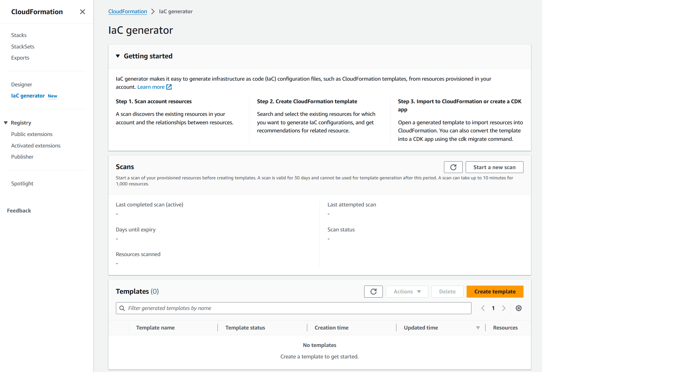
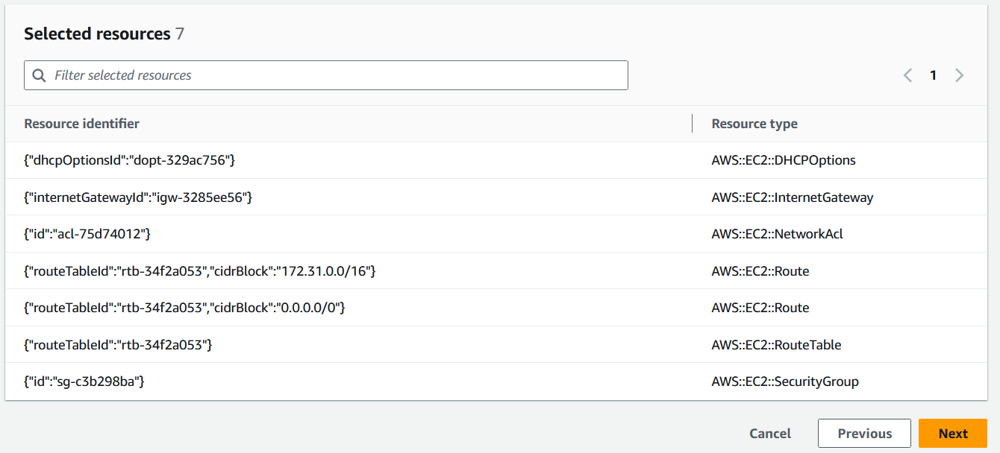

기존 리소스를 위한 템플릿 생성
AWS CloudFormation IaC 생성기(코드형 인프라 생성기)를 사용하면 계정에 프로비저닝된 리소스 중 CloudFormation에서 아직 관리하지 않는 AWS 리소스를 사용하여 템플릿을 생성할 수 있습니다. 템플릿을 사용하여 CloudFormation으로 리소스를 가져오거나 새 계정 또는 리전에서 리소스를 복제할 수 있습니다.
IaC 생성 프로세스는 여러 단계로 구성되어 있습니다.
-
계정 스캔을 시작합니다.
-
처음부터 템플릿을 만들거나 기존 스택의 템플릿을 시작점으로 사용하여 템플릿을 만듭니다.
-
리소스 추가 마법사를 사용하여 스캔한 리소스와 관련 리소스를 템플릿에 추가합니다.
-
CloudFormation에서 관리할 리소스를 스택으로 가져오거나 AWS CDK 앱으로 마이그레이션합니다.
IaC 생성기 특성은 모든 상업 리전에서 사용할 수 있으며 많은 일반적인 AWS 리소스 유형을 지원합니다. 전체 목록은 리소스 유형 지원 단원을 참조하세요.
주제
고려 사항
읽기 권한이 있는 리소스에 대해 CloudFormation 레지스트리에 게시된 AWS 리소스에 대해 JSON 또는 YAML 템플릿을 생성할 수 있습니다. IaC 생성기 기능의 템플릿은 리소스 속성을 속성별로 설명할 필요 없이 클라우드 리소스를 안정적이고 빠르게 모델링합니다.
다음 표에는 IaC 생성 특성에 사용할 수 있는 할당량이 나와 있습니다.
| 이름 | 값 |
|---|---|
|
계정 스캔에서 처리될 수 있는 리소스의 최대 수 |
100000 |
|
일일 스캔 횟수(리소스가 10,000개 미만인 계정의 경우) |
3 |
|
일일 스캔 횟수(리소스가 10,000개 초과인 계정의 경우) |
1 |
|
계정당 생성되는 템플릿의 동시 개수 |
5 |
|
하나의 템플릿 생성을 위해 모델링된 리소스의 동시 개수. |
5 |
|
하나의 템플릿에서 모델링할 수 있는 총 리소스 수 |
500 |
중요
IaC 생성기는 사용자 리전의 Cloud Control API에서 지원하는 리소스만 지원합니다. 자세한 내용은 Cloud Control API 사용 설명서의 리소스 유형이 Cloud Control API를 지원하는지 여부를 참조하세요.
템플릿 생성(콘솔)
이 섹션에서는 템플릿을 만들고, 템플릿에 리소스를 추가하고, IaC 생성기 특성을 사용하여 템플릿에서 스택으로 리소스를 가져오는 방법에 대해 설명합니다.
IaC 생성기를 사용하여 새 템플릿을 열려면 다음을 수행합니다.
AWS Management Console에 로그인하여 https://console.aws.amazon.com/cloudformation
에서 AWS CloudFormation 콘솔을 엽니다. -
탐색 창에서 IaC 생성기를 선택합니다.
 -
스캔 패널에서 새 스캔 시작을 선택합니다. 스캔을 통해 계정에 프로비저닝된 리소스와 리소스 간의 관계를 파악할 수 있습니다. 리전의 계정에 보유한 리소스가 많을수록 스캔하는 데 더 오래 걸립니다.

-
템플릿 페이지에서 템플릿 생성을 선택합니다.

-
새 템플릿에서 시작을 선택합니다.
-
템플릿 이름 패널에 생성된 템플릿 이름을 입력합니다.
-
(선택 사항) 삭제 정책 및 업데이트 교체 정책을 구성합니다.
-
다음을 선택하여 스캔한 리소스를 템플릿에 추가합니다.
-
템플릿에 스캔한 리소스를 추가하려면 다음을 수행합니다.
-
스캔한 리소스 목록에서 스캔한 리소스 목록을 찾아봅니다. 리소스 식별자, 리소스 유형 또는 태그를 기준으로 리소스를 필터링할 수 있습니다. 필터는 상호 포괄적입니다.

-
추가하려는 리소스를 하나 이상 선택합니다.
템플릿에 필요한 모든 리소스를 추가할 때까지 1단계와 2단계를 반복합니다.
 -
다음을 선택하여 스캔한 리소스 추가 페이지를 종료하고 관련 리소스 추가 페이지로 진행합니다.
-
관련 리소스 권장 목록을 검토하세요. Amazon EC2 인스턴스와 보안 그룹 등의 관련 리소스는 상호 의존적이며 일반적으로 동일한 워크로드에 속합니다. 생성된 템플릿에 포함하려는 관련 리소스를 선택합니다.
참고
이 템플릿에 모든 관련 리소스를 추가하는 것이 좋습니다.

-
템플릿 세부 정보, 스캔한 리소스, 관련 리소스를 검토하세요. 변경하려면 편집을 선택합니다.
-
템플릿 생성을 선택하여 검토 및 생성 페이지를 종료하고 템플릿을 생성합니다.

결과: CloudFormation 템플릿 생성을 시작하고 스캔한 리소스와 관련 리소스를 추가했습니다.
CloudFormation에서 관리할 리소스를 스택으로 가져오려면 다음을 수행합니다.
-
스택으로 가져오기를 선택하고 다음을 선택합니다.
-
스택 세부 정보 지정 페이지의 스택 지정 패널에 스택 이름을 입력합니다. 다음을 선택합니다.
-
스택에 대한 파라미터를 검토하고 입력합니다. 다음을 선택합니다.
-
변경 사항 검토 페이지에서 옵션을 검토하고 다음을 선택합니다.
-
검토 및 가져오기 페이지에서 세부 정보를 검토하고 리소스 가져오기를 선택합니다.
결과: IaC 생성기를 사용하여 템플릿에 추가된 모든 리소스를 CloudFormation 스택으로 가져옵니다.
템플릿 생성(AWS CLI)
이 섹션에서는 AWS CLI를 사용하여 리소스 검색, 템플릿 생성, 템플릿에 리소스 추가 및 업데이트, 템플릿을 삭제하는 방법에 대해 설명합니다.
계정의 리소스를 스캔하려면 다음을 수행합니다.
-
선택한 리전의 계정에 있는 리소스를 스캔하려면 start-resource-scan 작업을 사용합니다.
$aws cloudformation start-resource-scan명령은 다음을 반환합니다.
{ "ResourceScanId": \ "arn:aws:cloudformation:us-east-1:123456789012:resourceScan/0a699f15-489c-43ca-a3ef-3e6ecfa5da60" }
계정 리소스 스캔에 대해 설명하려면 다음을 수행합니다.
-
계정의 리소스 스캔에 대해 설명하려면 describe-resource-scan 작업을 사용합니다.
$aws cloudformation describe-resource-scan \ --resource-scan-id \ "arn:aws:cloudformation:us-east-1:123456789012:resourceScan/0a699f15-489c-43ca-a3ef-3e6ecfa5da60"명령은 다음을 반환합니다.
{ "ResourceScanId" : \ "arn:aws:cloudformation:us-east-1:123456789012:resourceScan/0a699f15-489c-43ca-a3ef-3e6ecfa5da60", "Status": "complete", "StartTime": "2023-08-21T03:10:38.485000+00:00", "EndTime": "2023-08-21T03:20:28.485000+00:00", "PercentageCompleted": 100.0, "ResourceTypes": [ "AWS::EKS::Cluster", "AWS::S3::Bucket" ], }
스캔한 모든 리소스를 나열하려면 다음을 수행합니다.
-
스캔에서 찾은 리소스를 나열하려면 list-resource-scan-resources 작업을 사용합니다. 응답에는 CloudFormation에서 이미 리소스를 관리하고 있는지 여부를 나타내는 열이 포함되어 있습니다.
$aws cloudformation list-resource-scan-resources \ --resource-scan-id \ "arn:aws:cloudformation:us-east-1:123456789012:resourceScan/0a699f15-489c-43ca-a3ef-3e6ecfa5da60" \ --resource-identifier exampleResource명령은 다음을 반환합니다.
{ "Resources": [ { "ResourceType": "AWS::EKS::Cluster", "ResourceIdentifier": { "ClusterName": "exampleResourceCluster" } }, "ManagedByStack": false { "ResourceType": "AWS::S3::Bucket", "ResourceIdentifier": { "BucketName": "exampleResourceBucket" }, "ManagedByStack": false } ] }이 예에서는
list-resource-scan-resources의 출력이resources.json이라는 JSON 파일에 저장되어 있다고 가정합니다.
스캔한 리소스와 관련된 모든 리소스를 나열하려면 다음을 수행합니다.
-
스캔한 리소스와 관련된 리소스를 나열하려면 스캔한 리소스를 최대 100개까지 배치로 만들고 각 배치에 대해 list-resource-scan-related-resources 작업을 사용합니다. 목록의 중복된 리소스가 출력에 포함될 수 있다는 점에 유의하세요.
응답에는 CloudFormation에서 이미 리소스를 관리하고 있는지 여부를 언급하는 열이 포함되어 있습니다. 템플릿에 관련 리소스를 모두 추가하는 것이 좋습니다.
$aws cloudformation list-resource-scan-related-resources \ --resource-scan-id \ "arn:aws:cloudformation:us-east-1:123456789012:resourceScan/0a699f15-489c-43ca-a3ef-3e6ecfa5da60" \ --resources file://resources.json명령은 다음을 반환합니다.
{ "RelatedResources": [ { "ResourceType": "AWS::EKS::Nodegroup", "ResourceIdentifier": { "NodegroupName": "exampleNodegroup" }, "ManagedByStack": false }, { "ResourceType": "AWS::IAM::Role", "ResourceIdentifier": { "RoleId": "arn:aws::iam::123456789012:role/S3Access" }, "ManagedByStack": false } ] }참고
리소스 입력 목록의 길이는 100을 초과할 수 없습니다. 100개 이상의 리소스에 대한 관련 리소스를 나열하려면 100개씩 배치로 작업을 실행하고 결과를 통합합니다.
list-resource-scan-related-resources의 출력도resources.json이라는 이름의 JSON 파일에 추가된다고 가정합니다.
템플릿을 생성하려면 다음을 수행합니다.
-
리소스 없이 새 템플릿을 생성하려면 create-generated-template 작업을 사용하고 템플릿 이름을 지정합니다.
$aws cloudformation create-generated-template \ --generated-template-nameTemplateNamecreate-generated-template명령은 다음을 반환합니다.{ "Arn": \ "arn:aws:cloudformation:us-east-1:123456789012:generatedtemplate/7fc8512c-d8cb-4e02-b266-d39c48344e48", "Name": "TemplateName" }
생성된 템플릿을 리소스로 업데이트하려면 다음을 수행합니다.
-
새로 만든 템플릿을 업데이트하려면 추가하려는 리소스 목록을 지정할 수 있습니다. 이 예에서는 파일
resources.json을 사용합니다. 다음은resources.json에 대한 JSON 텍스트 파일입니다.[ { "ResourceType": "AWS::EKS::Cluster", "LogicalResourceId":"Cluster", "ResourceIdentifier": { "ClusterName": "exampleResourceCluster" } }, { "ResourceType": "AWS::S3::Bucket", "LogicalResourceId":"Bucket", "ResourceIdentifier": { "BucketName": "exampleResourceBucket" } }, { "ResourceType": "AWS::EKS::Nodegroup", "LogicalResourceId":"Nodegroup", "ResourceIdentifier": { "NodegroupName": "exampleNodegroup" } }, { "ResourceType": "AWS::IAM::Role", "LogicalResourceId":"Role", "ResourceIdentifier": { "RoleId": "arn:aws::iam::123456789012:role/S3Access" } } ]템플릿을 업데이트하려면 update-generated-template 작업을 사용하고 스택 이름을 지정한 다음 텍스트 파일을 지정하여 템플릿에 리소스를 추가합니다.
--cloud-formation-template-configuration옵션은 포함되어 있지 않으므로UpdateReplacePolicy및DeletionPolicy정책이 기본적으로Retain으로 설정되어 있습니다.$aws cloudformation update-generated-template \ --generated-template-nameTemplateName\ --add-resources file://resources.jsonupdate-generated-template명령은 다음을 반환합니다.{ "Arn": "arn:aws:cloudformation:us-east-1:123456789012:template/equipment-sorter", "Name": "TemplateName" }
스택 이름을 기준으로 지정된 템플릿을 삭제하려면 다음을 수행합니다.
-
생성된 템플릿을 삭제하려면 delete-generated-template 작업을 사용하고 템플릿 생성 이름 또는 템플릿 생성 ARN을 지정합니다.
$aws cloudformation delete-generated-template \ --generated-template-nameTemplateName
AWS CDK를 사용하여 템플릿 생성 및 관리
AWS Cloud Development Kit (AWS CDK)는 널리 사용되는 프로그래밍 언어를 사용하여 AWS CloudFormation 리소스를 개발, 관리, 배포하는 데 사용할 수 있는 오픈 소스 소프트웨어 개발 프레임워크입니다.
AWS CDK CLI는 IaC 생성기와의 통합 기능을 제공합니다. AWS CDK CLI cdk migrate 명령을 사용하여 AWS CloudFormation 템플릿을 생성하고 리소스를 포함하는 새 CDK 앱을 생성합니다. 그런 다음 AWS CDK를 사용하여 리소스를 관리하고 AWS CloudFormation에 배포할 수 있습니다.
자세한 내용은 AWS Cloud Development Kit (AWS CDK) 개발자 안내서의 AWS CDK로 마이그레이션을 참조하세요.